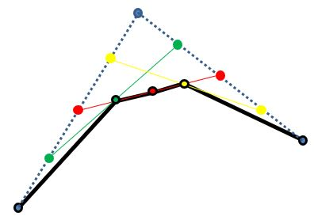

如果要繪製像素曲線，例如〈貝茲曲線〉，方式之一是透過 p5.js 的 bezierPoint 求得貝茲曲線上的點，並使用〈像素直線〉的實作的函式來繪製，只不過稍嫌麻煩了一些。
思考一下〈貝茲曲線〉談到的原理，以三個控制點為例，如果求得控制點間的中點，然後兩個中點的中點，就可以求得曲線上的一點，接著以控制點間的中點來對分，持續遞迴，也可以求得貝茲曲線：

如果是針對高解析度的圖片或螢幕，這種不透過繪圖 API，自行計算每個像素點的方式或許沒有效率，不過現在是特意要繪製像素風格的曲線，也就是說相當於自行設低了某個解析度，這種方式足以應付，而且易懂而簡單。
將以上概念擴充到四個控制點，來實作一個 pxBezier：
在〈Catmull-Rom 樣條〉談過 curve 的實作原理，它是基於貝茲曲線，既然有了 pxBezier，可不可以也實作個 curve 的像素版本 pxCurve 呢？這一點都不難：
這麼一來，若有多個控制點，就可以透過 pxCurve 來連續繪製了：